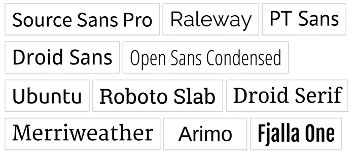

El inicio de los tiempos
Se considera el inicio de la digitalización de las fuentes tipográficas alrededor de los años 60s con la Digiset, la primera herramienta de composición digital, creada por Rudolf Hell, quien creó Digi Grotesk, una fuente tipográfica trabajada en bitmap. Sin embargo esta presentaba un problema, ya que se tendrían que realizar caracteres nuevos cada vez que se deseara cambiar el tamaño. Por ello, durante los años 70 nacieron las fuentes vectoriales, estas son de fácil uso ya que son escalables a cualquier dimensión.
La revolución tecnológica: De Macintosh a TrueTypeFonts
El mundo de la tecnología tuvo un momento revolucionario con el surgimiento de ordenadores personales, particularmente Apple con el debut de Macintosh, a mediados de los 80s. En tan solo 10 años, la tipografía web tuvo momentos de gran mejora: el desarrollo de el lenguaje PostScript y el tipo de archivo TrueTypeFonts (.ttf), el cual combina en un único archivo la información necesaria para mostrar la fuente en pantalla y para imprimirla.

A mediados de los 90s Adobe y Microsoft anuncian la creación de OpenTypeFonts (.otf), un caracter digital que puede utilizar tanto en Mac como en PC. Durante la misma década, se considera el nacimiento oficial del internet y con él trae a la vida al CSS, que se utiliza para definir el formato de las páginas web dentro del cual se incorporan reglas relativas a la fuente y estilo.
En años recientes..
En los últimos 20 años han aparecido tecnologías que cada vez hacen la utilización de web fonts más sencilla y accesible, tales como SIFR (Scalable Inman Flash Replacement) o SVG (Scalable Vector Graphics), CSS3 en 2008 y sitios de alojamiento de fuentes como Google Fonts, Fontdeck y Typekit.
